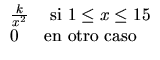

INSTITUTO TECNOLÓGICO DE COSTA RICA.
ESCUELA DE MATEMÁTICA
SEGUNDO EXAMEN PARCIAL
Probabilidades
II SEMESTRE DEL 2000
Probabilidades
II SEMESTRE DEL 2000
Tiempo: 2 Horas 15 Minutos
Puntaje Máximo 33 Puntos
- Sea X una variable aleatoria continua con distribución de probabilidad
dada por 6 Puntos
f (x) = 
- a.
- Determine el valor de k.
- b.
- Calcule
P([- 2 < X
 5])
5])
- c.
- Calcule VAR(X).
- Las consultas arriban a un servidor siguiendo una distribución de
Poisson con 12 consultas por minuto.4 Puntos
- a.
- ¿Cuál es la probabilidad de que el intervalo de tiempo entre las dos próximas consultas sea menor o igual a 7.5 segundos?
- b.
- ¿Cuál es la probabilidad de que el intervalo de tiempo entre las dos próximas consultas sea mayor a 10 segundos?
- Suponga que X es una variable aleatoria discreta que sigue una
distribución uniforme con posibles valores
x1 = C + L, x2 = C + 2L,..., xn = C + nL
donde L y C son constantes positivas.
Determine la esperanza de X .4 Puntos
- Se sabe que la distribución de notas en un curso sigue una distribución
normal. El 10% de los exámenes tienen una nota por encima de los 80 puntos,
y el 5% tiene una nota por debajo de los 40 puntos. > Cuáles son el valor de
la media y de la desviavión estándar para esta distribución.? 5 Puntos
- Suponga que tiempo T que tarda una persona en resolver un examen
sigue una distribución normal con media 50 minutos y desviación
estándar
de 12 minutos. Se quiere establecer un rango de tiempo centrado en
la media
en el cual se contesten el 90% de los test. ¿Cuál es ese
rango.? 4 Puntos
- Una compañia aseguradora, estima que en sus seguros ocurre una
pérdida total con una probabilidad de 0, 002, un 50% de pérdida
con probabilidad de 0, 01 y un 25% de pérdida
con probabilidad de 0, 1. Ignorando todos los otros tipos de pérdida si una persona desea asegurar su vehículo por una suma de
500000.00 colones, qué prima deberá cobrar la aseguradora para tener
una utilidad promedio de 10000.00 colones. 4 Puntos
- El 45% de los miembros de una población tienen edades superiores a
los 40 años. Se selecciona al azar una muestra de 550 personas.
>Cuál es la
probabilidad de que 6 Puntos
- a.
- Entre 200 y 250 tengan más de 40 años.?
- b.
- Al menos 150 sean mayores de 40 años?